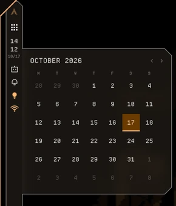

Bar
Any edge, set per monitor, docked or floating. 37 widgets, reordered by dragging.
crux replaces your bar, launcher, notification daemon, lock screen and theming scripts with one Quickshell config. You set it up from a settings panel, not a dotfile.
yay -S crux-shell-git

Features
No separate bar, notification daemon or lock screen to configure. Each part shares one theme, one settings file and one IPC target list.
Any edge, set per monitor, docked or floating. 37 widgets, reordered by dragging.
Quick toggles, audio sliders, weather, system gauges, and screenshot, record and color-pick actions.
Fuzzy app search, a run-command prefix and an inline calculator. Enter copies the result.
History, do-not-disturb, a volume OSD and a session menu.
Lock screen, polkit agent and idle handling for screen off, lock and suspend. All built in.
Night light, clipboard history, Philips Hue control and drop-in QML plugins.
Top on one monitor, left on the other. Click a widget and its drawer opens joined to the bar's outline. On a floating bar it unfolds straight out of the widget.

Theming
crux runs matugen on the wallpaper and writes the palette into Hyprland, kitty, GTK, Qt, yazi, btop, starship, Neovim, cava and Discord. Windows get chamfered corners to match, through Hyprland shader overrides.

These ship with crux. Choose one to preview it on this page.

Settings
Every option has a control: 20 tabs in five sections, with search across all of them. The home page shows your theme, your most-used toggles and shortcuts into the rest.
Install
crux targets Arch with Hyprland on a Lua config (hyprland.lua). It sends Lua dispatches, so with a classic hyprland.conf the bar can't switch workspaces.
yay -S crux-shell-gitgit clone https://github.com/teezlabs/crux-shell ~/.config/quickshell/crux~/.config/hypr/hyprland.lua
hl.on("hyprland.start", function()
hl.exec_cmd("qs -c crux")
end)Any keybind can call crux over IPC
qs ipc -c crux call launcher toggle
qs ipc -c crux call controlCenter toggle
qs ipc -c crux call lockscreen lockEach opens on the focused monitor. qs ipc -c crux show lists every target.
hyprlandquickshellmatugenbrightnessctlwlsunsetcliphistwl-clipboardplayerctlnetworkmanagerbluezpythongit
lm_sensorswf-recorderhyprpickerimagemagick